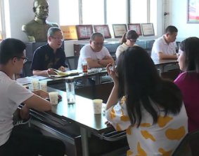

回到资讯天津高校师生走进孝义市考察孝义皮影保护传承
来源：孝义广播电视台 孝义融媒
发布时间：2021-07-19 17:05
传承中华传统技艺，推进非遗保护交流，日前，天津音乐学院专家教授和大学生在我市开展“孝义皮影戏”传承保护考察调研。
据悉，此次考察是天津音乐学院大学生实践创新训练计划“非遗振兴”项目之一。为期五天的考察期间，大家通过实地参观、现场采访、搜集资料、亲自体验以及和我市皮影艺人面对面交流的方式，对孝义皮影的造型特点、表演技法、传承现状有了全面了解。表示，将发挥专业优势，借鉴艺术、管理、传播等学科理论方法，宣传推广孝义皮影，从理论层面展开系统研究并形成科研成果，为弘扬中华传统文化、传承传播非遗作出贡献。
天津音乐学院艺术管理系副教授 硕士生导师 张兰芳：从多个角度对孝义皮影进行宣传推广和理论提升，这也是我们作为高校与地方合作，让文化遗产能够把它做实做大做强。希望通过我们的努力，为孝义的非物质文化遗产，孝义皮影作一些力所能及的贡献。
发展简史：
- 战国/宋金
孝义皮影起源于战国，是中国最早的皮影发源地之一。

- 明清
明清时为孝义皮影的鼎盛期，孝义境内皮影班社多达60多家，随后逐渐衰落。
-
- 1950年
1956年成立孝义市木偶皮影艺术团，"文革"时期撤消。
-
- 1978年
1978年恢复皮影戏演出，曾参加首届中国艺术节演出，赴英国交流访问演出。
-
- 1995年
1995年，孝义皮影中的武将形象作为邮票图案被全国人民认识。
-
- 至今
孝义皮影剧目丰富，现收藏有200余本，这些剧本题材广泛，内容丰富，极具学术价值。